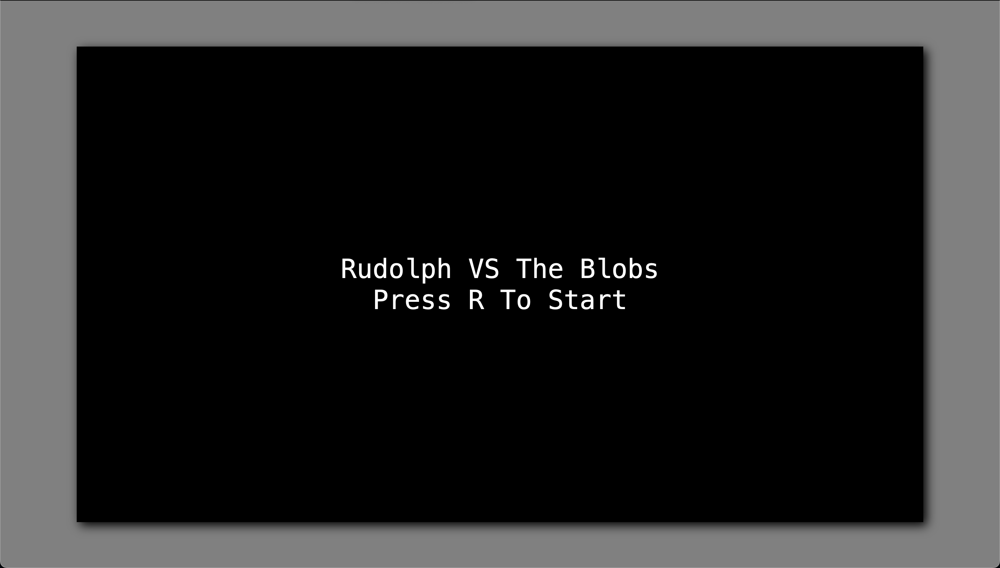

Title Screen
Working in the browser makes this really straightforward. We'll create
a div to hold the content of our
title screen, which will be shown when the page loads. Our game canvas
will be hidden. When the player chooses to start the game, (we'll just
use an "r" keypress, like we do for restarting), we'll hide the title
screen div and show the canvas.
<!-- index.html -->
<body>
<div id="game-container">
<div id="title-screen">
<div>Rudolph VS The Blobs</div>
<div>Press R To Start</div>
</div>
<canvas id="game-canvas"></canvas>
</div>
<script type="module" src="/src/main.ts"></script>
</body>
/* style.css */
#title-screen {
width: 100%;
height: 100%;
display: flex;
background: transparent;
color: white;
flex-direction: column;
align-items: center;
justify-content: center;
font: 40px monospace;
}
#game-canvas {
display: none;
}

We've got the screen, now we just need to handle that "r" keypress.
We'll have to move things around a little bit in
main.ts.
// main.ts
import { Game } from "./Game";
import "./style.css";
document.addEventListener("keydown", startGame);
const titleScreen = document.getElementById("title-screen") as HTMLDivElement;
function startGame(evt: KeyboardEvent): void {
if (evt.key === "r") {
const canvas = document.getElementById("game-canvas") as HTMLCanvasElement;
canvas.width = 1280;
canvas.height = 720;
const ctx = canvas.getContext("2d") as CanvasRenderingContext2D;
titleScreen.style.display = "none";
canvas.style.display = "block";
new Game(ctx).start();
document.removeEventListener("keydown", startGame);
}
}
Most of this is pretty self-explanatory, but there is one point of
interest. All our other event listeners in this project have been
anonymous arrow functions. This one, however, is a named function.
There's a good reason for this. The last line of this event listener
is very important. Without it, the user can go on pressing "r" and
starting up new games until the proverbial cows come home, because the
document will continue listening for this keypress unless we tell it
to stop. We've used the
gameOver flag in other parts of
our code to short circuit event listener behavior, but we don't have
access to that here. We could add another piece of game state just for
this, or we could just remove the event listener from the document
after the game has started. In order to remove an event listener,
however, you have to call
removeEventListener with the
exact same arguments that were used for
addEventListener. Same event
type, same callback. That means we can't use an anonymous function in
addEventListener, because there's
no way for us to pass that same function to
removeEventListener. Creating a
named function allows us to use it in both places and tell the
document to stop listening for this keypress event once the game has
started.
This is a big milestone for us! The game is now fully functional. We have a title screen, the ability to destroy and be destroyed by enemies, levels of increasing difficulty, a score to track our performance, and a game over screen that allows us to restart the game. From now on, we'll be adding polish to take this game to the next level.